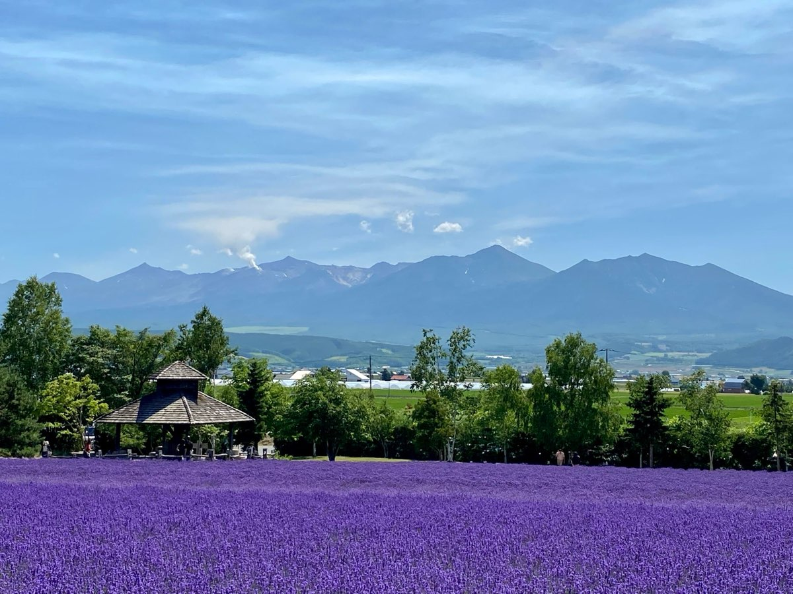
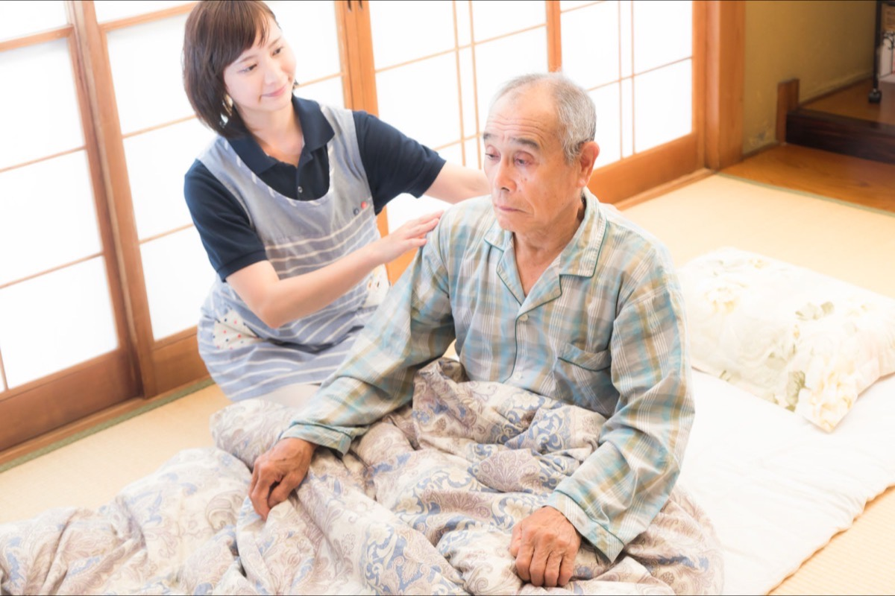
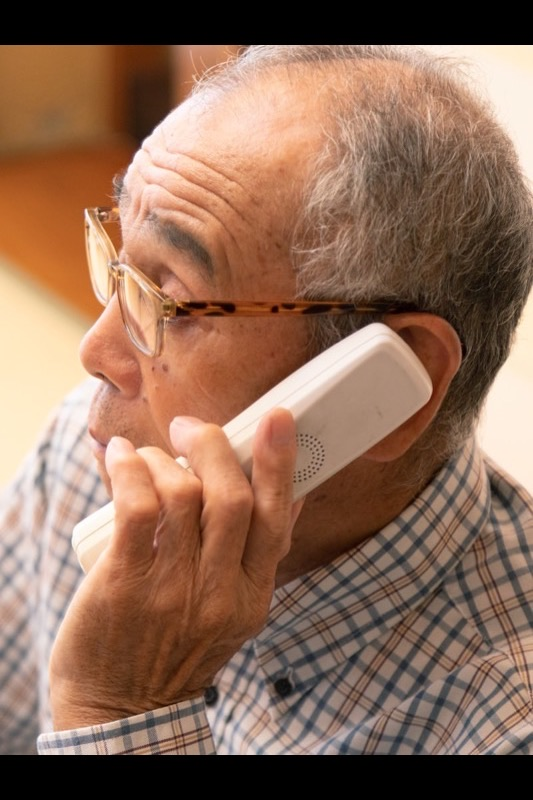
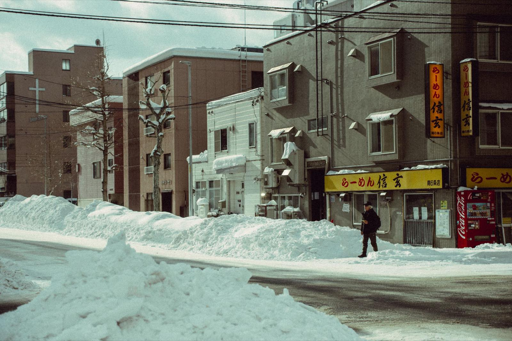

親が通院できなくなったら？最初にすること
相談すべき3つの窓口、通院が難しくなった7つのサイン、相談前に整理する情報を表でまとめました。
コラム
訪問診療・在宅医療について、ご家族と施設の方に向けた解説記事をまとめています。
このページでは、訪問診療を考えるときに迷いやすいテーマを、記事ごとに整理しています。往診との違い、通院が難しくなったときの相談先、夜間の急変、退院後の準備、施設への導入、北海道の冬の通院までを扱っています。
記事一覧
公開日はいずれも2026年8月22日です。内容は制度の改定や状況の変化に応じて更新します。

相談すべき3つの窓口、通院が難しくなった7つのサイン、相談前に整理する情報を表でまとめました。

計画性・依頼のしかた・頻度・同意書・費用の考え方から、両者の違いを8項目の表で整理しました。

すぐ119番を検討する症状、まず在宅医へ相談する状況、電話で伝える8項目を表にしました。

退院前カンファレンスの確認項目、自宅環境、医療の引き継ぎ、退院当日からの流れをまとめました。
積雪・凍結・除雪待ちの負担、冬に悪化しやすい病気、暖房と停電への備え、冬の訪問診療の動き方。

契約前に確認したい12項目のチェックリスト、導入の3フェーズ、切り替え時の注意点を整理しました。
※人物写真はイメージです。
関連ページ
今のご状況に近いものから読み進めてください。
| 今のご状況 | おすすめの記事 |
|---|---|
| 親を病院へ連れて行くのが難しくなってきた | 親が通院できなくなったら？最初にすること |
| 「訪問診療」と「往診」の違いが分からない | 訪問診療と往診の違いを表で解説 |
| 夜間に具合が悪くなったときの判断が不安 | 夜間の急変、救急車を呼ぶ？在宅の判断目安 |
| 退院が決まったが、家で何を準備すればよいか分からない | 退院後に自宅で療養するための準備リスト |
| 冬の通院が続けられるか心配（北海道） | 北海道の冬、高齢者の通院はなぜ大変か |
| 施設で協力医療機関を探している・切り替えたい | 施設が協力医療機関を選ぶときの確認項目 |
費用や対象、訪問の頻度など、記事をまたぐご質問は訪問診療のよくあるご質問（全35問）にまとめています。個別のご事情については、お電話でご相談ください。ご住所と現在の状況をうかがったうえで、当院で対応できるかを個別にご案内します。
テーマから探す
記事を読んでお困りの方へ
記事の内容は一般的な目安です。実際の症状や療養環境に合わせた判断は、医師や関係職種と相談しながら進めます。
夜間・休日は電話でご相談いただけるオンコール体制です。主治医への直通や訪問を保証するものではありません。緊急時は119番を優先してください。詳しい連絡方法